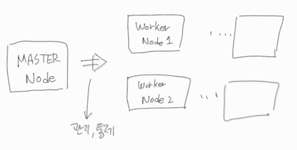
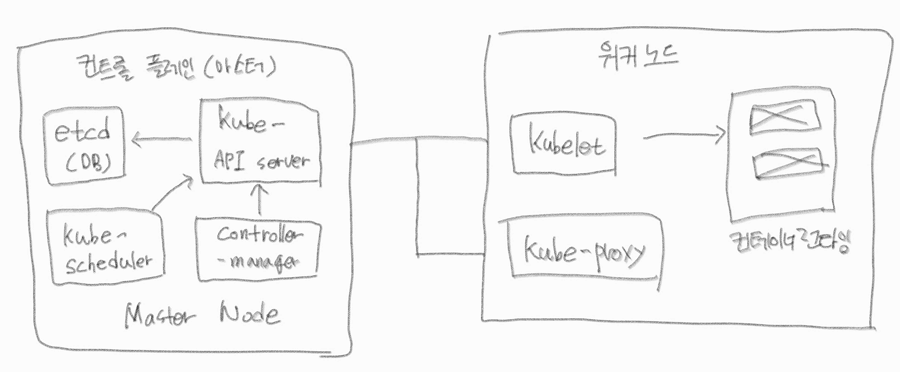

Kubernetes(쿠버네티스)

쿠버네티스에 대해 관심을 갖고 올해 CKA 자격 취득을 목표로 공부하고 있는 중이다.

쿠버네티스 소개
- 구글에서 보그(Borg)라는 내부 시스템으로 개발하다 쿠버네티스라는 이름으로 오픈소스 공개
- 조직 규모가 클 때 엄청난 가치를 발휘
- 인프라의 추상화 = 개발/배포/관리를 단순화
- 모든 노드를 하나의 거대한 컴퓨터 처럼 실행
쿠버네티스 장점
- 애플리케이선 배포 단순화
- 하드웨어 활용도 극대화
- 상태확인 및 자가진단
- 오토스케일링
- 애플리케이션 개발 단순화
클러스터 아키텍쳐

마스터 노드와 워커 노드
- 마스터 노드
- 관리, 통제
- 워커 노드
- 배포되는 애플리케이션 실행

클러스터 아키텍처
컨트롤 플레인
- 클러스터를 관리
- 고가용성 보장
- 애플리케이션은 실행하지 않음
- 구성요소
- 쿠버네티스 AIP 서버
Note사용자, 컨트롤 플레인과 통신
- 스케쥴러
Note배포 가능한 각 구성요소에 워커노드 할당
- 컨트롤 매니저
Note구성요소 복제, 워커노드 추적, 노드 장애처리
- 데이터 스토리지
Noteetcd는 구성을 지속적으로 저장
- 쿠버네티스 AIP 서버
노드
- 애플리케이션 실행
- 구성요소
- 컨테이너 런타임
Note컨테이너를 실행하는 도커
- Kubelet
NoteAPI 서버와 통신하고 노드에서 컨테이너를 관리
- 쿠버네티스 서비스(kubernetes service), 프록시(kube-proxy)
Note애플리케이션 간에 네트워크 트래픽을 분산, 연결
- 컨테이너 런타임
쿠버네티스 실습
- 카타코다 쿠버네티스 플레이 그라운드
- https://www.katacoda.com/courses/kubernetes/playground
- 1시간 동안 쓸 수 있고, 예제가 많다.
- play with kubernetes
- https://labs.play-with-k8s.com
- 4시간 동안 쓸 수 있고, 직접 구성해야 한다.
play with kubernetes
로그인은 github 계정 또는 docker 계정이 필요하다.
-
[ADD NEW INSTANCE ]버튼을 클릭한다.
-
Node1 인스턴스가 생성되며, 아래와 같은 화면이 출력 된다.
InfoWARNING!!!!
This is a sandbox environment. Using personal credentials is HIGHLY! discouraged. Any consequences of doing so, are completely the user’s responsibilites.
You can bootstrap a cluster as follows:
- Initializes cluster master node:
kubeadm init –apiserver-advertise-address $(hostname -i) –pod-network-cidr 10.5.0.0/16
- Initialize cluster networking:
kubectl apply -f https://raw.githubusercontent.com/cloudnativelabs/kube-router/master/daemonset/kubeadm-kuberouter.yaml
- (Optional) Create an nginx deployment:
kubectl apply -f https://raw.githubusercontent.com/kubernetes/website/master/content/en/examples/application/nginx-app.yaml
The PWK team.
[node1 ~]$
-
node1 터미널에 kubeadm init 명령어를 입력하여 master 서버로 만든다.
kubeadm init --apiserver-advertise-address $(hostname -i) --pod-network-cidr 10.5.0.0/16 -
master 서버 생성이 끝나면 아래와 같은 내용이 출력 되는데,
kubeadm join(워커노드 join) 부분은 따로 복사하여 저장해 두자.InfoWARNING!!!!
This is a sandbox environment. Using personal credentials is HIGHLY! discouraged. Any consequences of doing so, are completely the user’s responsibilites.
You can bootstrap a cluster as follows:
- Initializes cluster master node:
kubeadm init –apiserver-advertise-address $(hostname -i) –pod-network-cidr 10.5.0.0/16
- Initialize cluster networking:
kubectl apply -f https://raw.githubusercontent.com/cloudnativelabs/kube-router/master/daemonset/kubeadm-kuberouter.yaml
- (Optional) Create an nginx deployment:
kubectl apply -f https://raw.githubusercontent.com/kubernetes/website/master/content/en/examples/application/nginx-app.yaml
The PWK team.
[node1 ~]$
-
그 다음 CNI kube-router 구성을 해야 한다.
kubectl apply -f https://raw.githubusercontent.com/cloudnativelabs/kube-router/master/daemonset/kubeadm-kuberouter.yaml -
워커 노드를 만들기 위해서는 [ADD NEW INSTANCE ]버튼을 클릭한다.
-
node2 인스턴스가 만들어 지면 아래 명령어를 입력하여 master 서버와 연결을 한다.
kubeadm join 192.168.0.33:6443 --token wxoizr.vo38zscn9e185wt6 \ --discovery-token-ca-cert-hash sha256:b39d6171a8537d90b638780ccab260797f0f9506ac326a63e11366e1be0c615f -
node1 인스턴스로 돌아가 아래 명령어를 입력한다.
kubectl get nodes -o wide아래와 같은 결과가 출력된다.
[node1 ~]$ kubectl get nodes -o wide NAME STATUS ROLES AGE VERSION INTERNAL-IP EXTERNAL-IP OS-IMAGE KERNEL-VERSION CONTAINER-RUNTIME node1 Ready control-plane,master 15m v1.20.1 192.168.0.33 <none> CentOS Linux 7 (Core) 4.4.0-197-generic docker://20.10.1 node2 Ready <none> 8m46s v1.20.1 192.168.0.32 <none> CentOS Linux 7 (Core) 4.4.0-197-generic docker://20.10.1 [node1 ~]$
- 복사 = Ctrl + Insert
- 붙여넣기 = Shift + Insert
- 화면 클리어 = Ctrl + L
계속 업데이트 될 예정